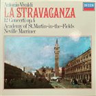

Vivaldi: La Stravaganza – analogue recordings on LP
Notes on the sound quality of La Stravaganza releases on LP (stereo, all-analogue recordings).
LP side layout
The cycle consists of 12 concertos, which are traditionally fitted on two LPs, three concertos per side. Sides 1 and 2 are typically about 30 minutes long and thus prone to inner groove distortion.
Set on 3 LPs
The only recording of La Stravaganza issued on three LPs is that of the Pro Musica String Orchestra Stuttgart directed by Rolf Reinhardt (Discogs). The sound clips available on YouTube do not sound very promising, although this may be due to poor transfers (sound clip, different rip). The recording is from 1954, and the playing is quite far from today's HIP ideal. It is not clear if the recording in 1954 was done in stereo, although Discogs does not show the 1976 release as mono.
Sets on 2 LPs
Neville Marriner, Academy of St Martin in the Fields, Argo / Decca

The recording sounds fine, with just a very slight loss of quality at the end of the 30-minute side 1. This holds even for the German reissue.